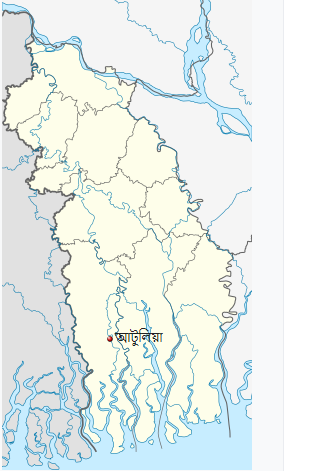

আটুলিয়া ইউনিয়ন
শ্যামনগর উপজেলার প্রাণকেন্দ্র ম্যানগ্রোভ বনভূমি সুন্দরবন সংলগ্ন সাতক্ষীরা জেলার ঐতিহ্যবাহী ১০ নং আটুলিয়া ইউনিয়ন শিক্ষা-দীক্ষা,ক্রীড়া-সংস্কৃতি ও ইতিহাস ঐতিহ্য মন্ডিত ইউনিয়নটি উপজেলার মধ্যে অন্যতম। ইউনিয়নের পূর্ব পাশ দিয়ে কুল কুল করে বয়ে গেছে খোলপেটুয়া নদী। এই এলাকায় বসবাসকারী মানুষ সুদুর অতীতকাল থেকেই লবণাক্ততা সহ বিভিন্ন প্রাকৃতিক দূর্যোগের মোকাবেলা করে আসছে।
এক নজরে আটুলিয়া ইউনিয়নের মৌলিক তথ্য

| আয়তন ৪১,৪৭ বর্গ কিঃ মিঃ | খালের সংখ্যা ১২ টি |
| গ্রামের সংখ্যা ২৩ টি | নদীর সংখ্যা ২ টি |
| মৌজা ৫ টি | মিষ্টি পানির পুকুর ৪০১ টি |
| মোট জনসংখ্যা ৩৭,০৬৫ জন | লোনা পানির পুকুর ৬৪ টি |
| পুরুষ ১৮,৫৭৫ জন | ভূমি অফিস ১ টি |
| নারী ১৮,৪৯০ জন | গুদাম ঘর ১ টি |
| মোট পরিবার সংখ্যা ৬১৭৬ টি | এক ফসলী জমি ২৩.৪৪ হেক্টর |
| ধর্ম ইসলাম ও হিন্দু | দুই ফসলী জমি ২০০ হেক্টর |
| প্রাথমিক বিদ্যালয় ২২ টি | তিন ফসলী জমি ০.২৫ হেক্টর |
| মাধ্যমিক বিদ্যালয় ৩ টি | পত জমি ৩২০ হেক্টরতি |
| কলেজ ২ টি | সাময়িক পতিত জমি ১২১৪ হেক্টর |
| মাদ্রাসা ৪ টি | নলকুপের সংখ্যা ১৩০ টি |
| মসজিদ ৪৭ টি | পিএসএফ ৪৭ টি |
| মন্দির ১৬ টি | আর ডাব্লিউ এইচ ৭৪ টি |
| অটো রাইস মিল ৪ টি | আশ্রয় কেন্দ্র ১ টি |
| ছমিল ৪ টি | পাকা সড়ক ১২,৮৩৩ কিঃ মিঃ |
| বরফকল ২ টি | ইট সোলিং ১৮ কিঃ মিঃ |
| এনজিও ৮ টি | কাঁচা রাস্তা ৮৩.৫ কিঃ মিঃ |
| শিক্ষার হার ৫২% | হাট বাজার ৫ টি |
| পরিবার কল্যাণ কেন্দ্র ১ টি | ভোটার সংখ্যা ৯,০৭৫ জন |
| কমিউনিটি ক্লিনিক ৪ টি |